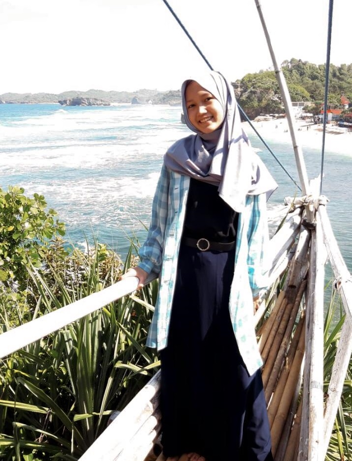

CURRICULUM VITAE

BIODATA DIRI
Nama Lengkap
:
Haniefa Aulia Rahma
Alamat Lengkap
:
Jl.Atang Sendjaya No.273 Ds.Bantarjaya RT 003/RW 001
Kec.Rancabungur Kab.Bogor
16310
Tempat Tanggal Lahir
:
Kota Bogor, 04 Februari 2003
Umur
:
18 Tahun
Jenis Kelamin
:
Perempuan
Agama
:
Islam
RIWAYAT PENDIDIKAN
TK Islam Nurul Huda (2009-2010)
SD Negeri Bantar Kambing 01 (2010-2016)
SMP Negeri 6 Kota Bogor (2016-2018)
SMAIT Bina Bangsa Sejahtera (2018-2021)
PENGALAMAN BERORGANISASI
Anggota MPK SMP Negeri 6 Kota Bogor - Komisi E
Ketua OSIS II SMP Negeri 6 Kota Bogor - Periode 2017/2018
Anggota OSIS SMAIT BBS - Seksi Bidang 1
Wakil Ketua OSIS SMAIT BBS - Periode 2019/2020
LIFE SKILLS
Public Speaking
Teamwork
Communication
Interpersonal Relation
CONTACTS
instagram
:
@haniefaauliaa
whatsapp
:
089636691425